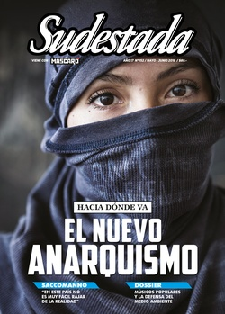

Buscar
Hacia dónde va el nuevo anarquismo
En nuestro país, la desaparición y el asesinato de Santiago Maldonado volvió a posicionar al anarquismo en la escena política. Después de décadas de bajo perfil y de recambio generacional, el movimiento libertario resurge a partir de la defensa de sus prácticas históricas, pero en particular, de asumir el nuevo contexto y procurar intervenir en la realidad concreta. No se trata de un fenómeno local: a nivel mundial, diversos procesos de lucha de raíz revolucionaria reinstalan la potencia ácrata como protagonista y exigen una relectura de un movimiento fragmentado, pero en franco crecimiento. En esta crónica, conversamos con militantes anarquistas de diversas corrientes sobre este nuevo proceso, sobre los desafíos que se vienen y sobre el presente, marcado por el regreso del fantasma anarquista en Argentina.
Edición N° 152
Mayo-Junio 2018
Revista bimensual
Comprar edición impresaSumario
- Hacia dónde va el nuevo anarquismo
- Carta a Facundo (*)
- "En este país no es muy fácil rajar de la realidad"
- Cantores de propuesta
- Cómo vencer a la realidad
- La voz embarrada del cura Mugica
- La construcción de la "mala madre"
- La oscura trama de la apropiación de niños
- "No hay más espacio para una política de conciliación de clases"
- Los mas solos de California
- Norita Cortiñas en Lomas
Compartir Articulo
"Ninguna idea enorme se extingue del todo en sus cenizas. A veces retorna, crepitante, dando chispazos, forjando el tipo de nidos donde se gestan las aves inmunes al fuego"
Christian Ferrer
Ahí están las banderas negras, otra vez en las calles. Detrás, capuchas, piedras, voces alzadas, bronca. La rabia que crece desde las entrañas. Irrumpen en la escena con un espíritu libertario que pretende recuperar buena parte de la rica tradición del anarquismo en Argentina, pero más que sujetarse a un pasado de fuego y rebeldía, intenta asumir el protagonismo hoy. De forma concreta, la desaparición y el asesinato de Santiago Maldonado abrió un nuevo cauce para el retorno del anarquismo. Su pertenencia ácrata, su raíz libertaria y trashumante, su conducta solidaria al sumarse a la lucha justa de los mapuches de este lado de la cordillera, pero también a la huelga de pescadores de Chiloé del lado chileno, permiten revisar buena parte de la identidad política que atravesaba a Santiago, que lo definía, que lo empujaba a la aventura y al compromiso. Más allá de su acercamiento a través del influjo del punk, de sus lecturas de los clásicos en la biblioteca platense Guliay-Polié de la calle 64, o de su participación activa en las charlas de ateneo, Santiago era anarquista en la acción. No promulgaba el ideario desde lo retórico, lo ponía en práctica.
Pero esta irrupción ácrata en las calles también generó una oleada de confusión y distorsión. Desde los medios de comunicación y también desde algunas organizaciones que participaban de las masivas marchas por la aparición con vida de Santiago, se produjo un señalamiento: la presencia de estos pequeños grupos anarquistas como un elemento extraño y peligroso. Casi de inmediato, más por pereza periodística que por ignorancia política, apuraron la lógica del infiltrado y la impusieron como lugar común. Si están vestidos de negro, si se tapan los rostros o le tiran piedras a la policía, no son manifestantes. Son servicios. La respuesta de los sectores anarquistas ante semejante afrenta fue contundente, sintetizada en un mensaje-consigna que se viralizó pocos días después: "No somos infiltrados, somos compañeros de Santiago Maldonado". Con esta breve explicación, sacaban de la cancha las teorías conspirativas y afirmaban que el anarquismo estaba de regreso. Con sus métodos, con sus principios, con sus convicciones. Pero también está claro que este resurgimiento está directamente vinculado con la creciente influencia ácrata en muchos procesos de lucha a nivel mundial. Y esta nueva etapa abre una serie de interrogantes que vale la pena presentar: ¿es posible hablar de un "nuevo anarquismo" o se trata de un continuo en una dinámica con etapas de opacidad y otras de protagonismo? ¿Qué nuevas formas asume hoy el anarquismo, a partir de la mutación del capitalismo opresor, pero también a raíz de la llegada a la política de una generación de pibes con otras certezas y otras herramientas? ¿Cómo es el vínculo con el mapa tradicional de la izquierda local, con los sectores de la oposición, con el Estado en manos hoy de la más rancia derecha, autoritaria y represiva? ¿Cuáles son los grandes desafíos que se vienen para aprovechar este momento de visibilidad de las ideas libertarias?
En uno de los murales que pintó Santiago en su pueblo, 25 de Mayo, dejó bien en claro su mirada sobre la realidad, y también el lugar que él pretendía ocupar en este pedacito de tiempo que le tocaba transitar. El mural cuenta, de su puño y letra, una frase del vindicador Severino Di Giovanni, anotada pocas horas antes de su fusilamiento, que conmueve hasta hoy. Que habla mucho de Severino, pero que también nos permite conocer mejor a Santiago: "No busqué afirmación social, ni una vida acomodada, ni tampoco una vida tranquila. Para mí elegí la lucha. Vivir en monotonía las horas mohosas de lo adocenado, de los resignados, de los acomodados, de las conveniencias, no es vivir. Es solamente vegetar y transportar en forma ambulante una masa de carne y de huesos. A la vida es necesario brindarle la elevación exquisita, la rebelión del brazo y de la mente. Enfrenté a la sociedad con sus mismas armas, sin inclinar la cabeza, por eso me consideran, y soy, un hombre peligroso".
Susana, fuego ácrata
Cuando un amigo docente le propuso el desafío, Susana le dijo que estaba loco, que la iban a echar del colegio. Pero después de un rato se dejó vencer por el entusiasmo. Compartir la Idea, abrir un mundo nuevo a pibes y pibas de doce años, contarles un pedacito de historia libertaria, de esos hombres y mujeres que la dejaron marcada para siempre, desde aquella primera vez que un libro de Osvaldo Bayer llamado Los vengadores de la Patagonia trágica, cayó en sus manos. Hasta ese encuentro inesperado, Susana masticaba su incomodidad: nacida en una familia de creyentes, no creía. Trabajaba limpiando casas ajenas, pero no encajaba. Algo le faltaba, se sentía un bicho raro y, al mismo tiempo, percibía cierta necesidad de comprometerse con una causa. Entonces llegó esa historia de peones rurales en huelga, de Antonio Soto, de Facón Grande, de sindicatos anarquistas peleándole a los patrones estancieros algunas mejoras, el viento patagónico de la masacre, el asesino de uniforme militar, los peones que resisten y son fusilados, el estigma del anarquismo coloreando cada tramo de aquella epopeya excluida de la historia oficial. La semilla del anarquismo germinó en Susana justo cuando andaba en la búsqueda. Y a los veintitantos años, Susana supo que iba a ser libertaria para toda la vida.
"¿Qué te parece si le das una charla de anarquismo a los chicos?", fue la invitación de su amigo docente. Susana es bibliotecaria escolar, y escuchó aquella propuesta como un absurdo, pero después fue puro impulso. En un par de días, Susana ya estaba con la cabeza en el aula, de frente a un auditorio de estudiantes de séptimo grado que escuchaban de su boca el bombazo justiciero de Simón Radowitzky y la vida apasionada de Severino Di Giovanni. "Los pibes se interesan, preguntan mucho. Es que Severino nunca aparece en un manual escolar, y si aparece lo meten entre los casos policiales, como un personaje oscuro. Para mí es una forma de difundir, que sepan que hay otros caminos, que no todo es ser peronista o radical. Que existe la posibilidad de no creer en ningún partido", le cuenta a Sudestada en un bar de Constitución.
Hace siete años que trabaja como bibliotecaria escolar y confiesa que se enamoró de su oficio, que no le gusta la pedagogía y que prefiere la cercanía con los libros, porque de ese modo tiene otra llegada con los pibes, más libertad para charlar con ellos. Empezó en La Plata, sola. Hasta hoy se define como una anarquista solitaria: visita ateneos, participa de charlas, se suma a las marchas, pero no a partir de un vínculo orgánico. Nutrió su hambre libertario en las bibliotecas, porque lo que ganaba limpiando casas no le alcanzaba para comprar libros. Tuvo un hijo en ese camino, después tuvo otro, terminó la secundaria para adultos, empezó a escribir poesía y ya no se detuvo, y durante todo ese proceso el fuego del anarquismo fue creciendo. Como la fiebre, incontenible: "Era una necesidad que se iba acumulando. Tenía que salir de algún modo, porque si no iba a estallar. Ahora me siento bien. El mundo no lo voy a cambiar sola, pero por lo menos los que me escuchen van a saber que se puede, que es mentira que solo gobernando podés cambiar las cosas. Que los pibes sepan, que cuestionen todo", explica.
Como a todos sus compañeros, la desaparición y la muerte de Santiago Maldonado fue un cimbronazo que abrió una herida lacerante. Se sumó a las marchas, cuando todavía lo buscaban sin saber que Santiago era anarquista. Algo más íntimo la empujaba a participar en la calle: "Santiago tenía 28 años… A mí se me cruzó mi hijo, que tiene esa edad. Me puse en el lugar de Estela, su mamá. Te matan un hijo. Me golpeó muy fuerte. Por la manera tal vez, el pibe allá, peleando, cosa que no hicimos nosotros: eran ocho pibes cortando la ruta, aguantando el embate asesino del Estado. Y tuvieron que huir. A Santiago lo empujaron a morir".
Hubo oportunismo político, señala. Muchos opositores aprovecharon el crimen de Santiago para hacer campaña electoral, y hasta algunos negaron la pertenencia de Santiago al anarquismo. "La muerte de Santiago nos dio rabia y nos dio fuerza a los anarquistas. Y empezamos a salir. 'Acá estamos, no somos invisibles', dijimos. Vamos a estar con Santiago, con Rafael Nahuel y con quien sea. La fuerza, la rabia y el dolor nos empujaron a vindicar esas luchas". Entonces, los compañeros salieron encapuchados, con sus banderas negras, agitando contra la prepotencia policial. Y la respuesta fue la negación primero ("son infiltrados", dijeron) y la estigmatización después. "No quito que pueda haber algún servicio, porque a la gorra nunca le voy a tener confianza. Pero de ahí a decir que todos eran infiltrados… Eso duele. Uno sabe lo que significa que te ensucien de esa manera. Fue con mala leche. Porque, además, tenemos motivos para salir encapuchados. Yo, en lo personal, trato de no ocultarme, ya no. Ya estoy escrachada. Pero el 24 de marzo, en la marcha, salimos todos a cara descubierta y éramos un montón. Fue una decisión que se tomó en asamblea: ir descubiertos, con banderas y todo, con nuestros trapos, sin ocultarnos"...
(La nota completa en la edición gráfica de Sudestada... ¿Por qué publicamos apenas un fragmento de cada artículo? Porque la subsistencia de Sudestada depende en un 100 por ciento de la venta y de la confianza con sus lectores, no recibimos subsidios ni pauta alguna, de modo que la venta directa garantiza que nuestra publicación siga en las calles. Gracias por comprender)
Comentarios
Hugo Montero
Articulos más vistos


LIBRERÍA SUDESTADA

Colección infantil

Distribuidora de Libros

Suscripción

Sudestada en URUGUAY

Otros articulos de esta edición
La oscura trama de la apropiación de niños
Mientras hoy un sector de la sociedad (muy ligada a la iglesia) se manifiesta “a favor de la vida” para ...
Los mas solos de California
En la última década, Slab City ha ganado fama de mito: en pleno Desierto de Sonora, en una base militar ...
"En este país no es muy fácil rajar de la realidad"
Si todo documento cultural es una crónica de la barbarie, como definió Walter Benjamin, entonces la literatura de Guillermo Saccomanno ...
Cantores de propuesta
En los últimos años, se multiplicaron las movilizaciones en la provincia de Córdoba frente a la expansión del monocultivo sojero ...
Carta a Facundo (*)
La voz embarrada del cura Mugica
Nelly Benítez es una militante barrial con un anecdotario tan grande como su corazón murguero, construido en sus cincuenta años ...